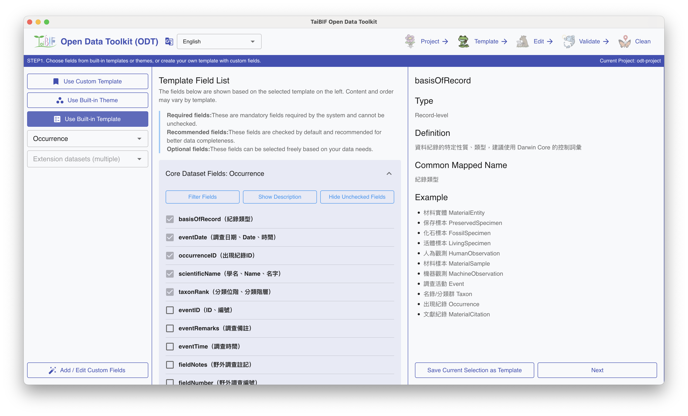
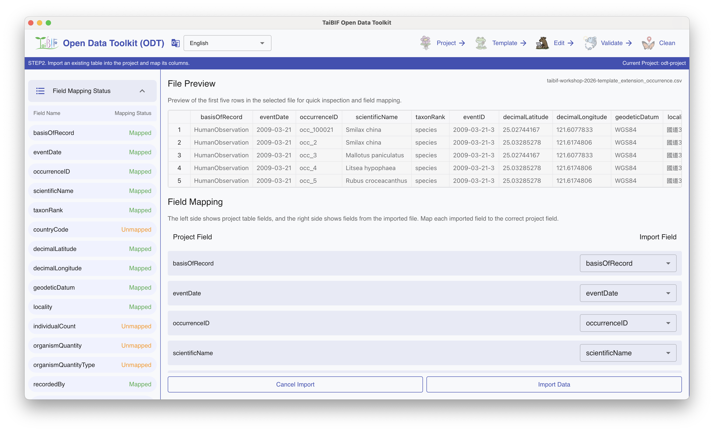
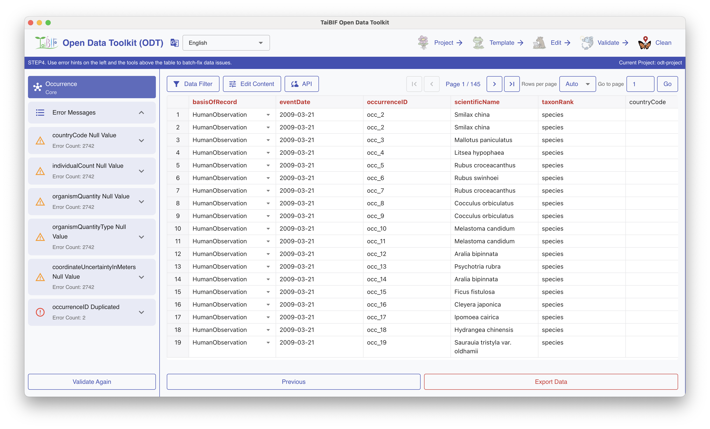

BIODIVERSITY DATA, READY TO SHARE
TaiBIFOpen DataToolkit
Prepare biodiversity data
for sharing.
Template→Edit→Validate→Clean
CHOOSE STANDARD FIELDS01 / TEMPLATE

BRING YOUR EXISTING DATA02 / FIELD MAPPING

FIND ISSUES. REFINE YOUR DATA.03 / CLEANING
